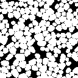
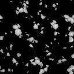

Noise Material

Abstract
This project marked the first time I created a 3D material from scratch while getting accustomed to a new software, no less.
Using noise exclusively as the basis for this material, I learned of a few interesting ways with which to create certain patterns and objects within textures in a procedural way.
Details
Production
08/2020
Time
3 days
Software
Substance Designer
Blender
| Production | 08/2020 |
| Time | 3 days |
| Software | Substance Designer Blender |
Basis
The material consists of two primary elements: A swirly, irregular base and
pointy stones embedded in the ground.
The base is comprised of several Perlin noises, used to create some large, uneven
elevations, and using a Slope Blur to imprint the intricate circular patterns onto itself.
Stones
The pebbles were created using a Voronoi texture and filling the cells with
overlapping gradients, blended together to create the sharp ridges all around.
Additionally, a cloud noise pattern creates the fine detail on top in order for
the surface to not appear too flat.

Blending
Using a Blend set to Max both of these elements fuse, and using a Blend set to Subtract allowed me to extract a mask for the stones that covers only the part sticking out of the ground to use for the coloring.

